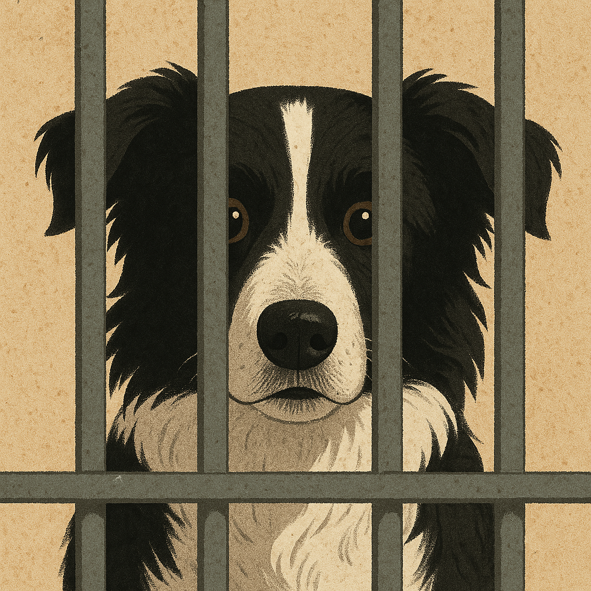
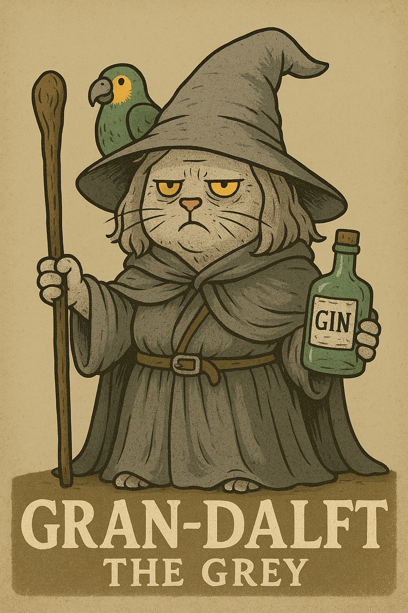

The UOC Observer
H'Online Since 2024 Fwend

A bird circled high above UOC.
Its wings caught the breeze, scanning the scarred grounds below. Torn bunting flapped. Broken clipboards littered the fields. A gust carried the faint sound of muttering — something about 70s interest rates.
The bird dove.
Fast. Precise.
It swept down toward the hedge, claws extended.
There — tucked between the branches.
It grabbed the object, twisted midair, and vanished skyward.
Below, the Kittling guards kept patting each other and chasing shadows.
They saw nuffink.
Inside UOC, Muldoon and McGee stepped out of Terry’s cell.
Muldoon was seething.
“We’s goin’ to ‘ave to tell the Emperor we still cain’t break ‘im…”
McGee trotted beside him, tail wagging faintly.
“Cheer up, fwend,” he said, nudging Muldoon. “The H’Emperor just put h’in a bwand new scwatching pjost! It’s got feaffers.”
Muldoon grunted.
“I don’t deserve a tweat. I failed.”
They passed the line h’of cells. Shadows behind bars. The cold hum of defeat.
McGee scratched at his ear. “You hear they weleased the Squire? To take h’out the Post Chance?”
Muldoon broke stride. Just a second.
How could McGee know that?
He’d been down in the Interrogation Woom the whole time…
But no. Must be coincidence.
News spreads fast in UOC.
They kept walking.
Behind them, a pair of white paws poked through cell bars.
A nose.
Hon.
“The Squire…” he whispered.
“Post Chance h’is going to njeed h’all the hjelp he can gets!”
He pressed against the cell door.
There was a creak.
Was that… movement?
Units Windflower Syndicate, Tie-Dye Triumvirate, and Joplinites raced down the path.
Leaves kicked up behind them. Vapour swirled from Weggie’s snout.
“If the Squire gets to Post Chance first…” growled Sergeant.
“Not cooool maaaan,” wheezed Weggie. “Not cooool…”
The path forked.
Sergeant halted.
“He coulda gone h’any of them,” he muttered.
They split.
Sergeant followed his nose, his ears twitching for trouble.
Then—
A pathetic groan on the wind.
A monotone rant about tariffs.
He’s already got to him.
“Privatisation’s a good thing, you know,” came the voice. “I worked all me life. Nobody gave me nuffink.”
A soft whimper: “uhuh…”
Post Chance.
Sergeant broke into a sprint. He had to flank. Get behind them. Interrupt the cycle.
He leapt the hedge.
Misjudged.
He landed behind Post Chance, stumbled, spun—
Too late.
The Squire turned, already ranting.
“Ah, alsatians. Used to be good dogs. But their hips! Too much breeding, that’s what it is.”
“Ergh,” muttered Sergeant.
“My parents were military doggos,” he barked.
“National conscription! That’s what we need!” the Squire shouted, frothing. “Never did it myself, of course — but it’d be good for the young’uns!”
Sergeant wobbled.
The world tilted.
He tried to rally.
But the Squire was too strong.
“Y’know,” the Squire began, “there never used to be problems here. Not ‘til the immigrants. 1976. That’s when the rot set in. First ones turned up—”
“H’it was 1979!”
The voice rang out — hoarse, weathered, laced with booze and brilliance.
Sergeant blinked.
He was lying over Post Chance’s collapsed body.
A figure stood beside them.
Grey. Hooded. Crooked.
At her side, Olly Polly, the UOC parrot.
“Gr… Granny? Granny Donnelly?”
The figure straightened.
“Days,” she rasped. “Days I hung in that hedge, so I did. Naught but wind, thorns, and no gin.”
She lifted her chin. Her breath fogged.
“The Granny you once knew is no mjore…”
She flung her cloak aside.
“I am… GRAN-DALF.”
A pause.
“I did stop h’in the H’Oak on the way here, mind.”
Behind her, the Hippie units skidded into view.
Weggie panted, “Granny got here first. I was gonna be Ham-dalf…”
Granny turned to the Squire.
He was mid-sentence: “…And then I told the butcher, I said—”
She raised a paw.
“No more, Moore. You face Granny of the First Gin. Whisperer of the Ancient Tongue. Dwunkle of Secrets. Servant of the Silvery Spirits!”
The Squire blinked.
“Go back to the lounge,” she roared. “You shall not waffle!”
The ramble battle began.
For every Squire anecdote, Gran-Dalf had a rebuttal. She knew every boring saga. She’d been there. Sometimes before it happened.
Tariffs? She countered with a speech about double-duty consignment.
1972 seed law? She quoted the 1971 draft.
It lasted hours.
The Hippies dared not move.
Post Chance groaned.
The Squire tried to sidestep.
Gran-Dalf whirled.
“Didn’t ‘appen in my day!” she barked, slapping his ankle with a leaflet from 1963.
“You’re rude! Rude is what you is!”
The Squire shrank.
He turned.
He tried to flee.
But he paused.
And scooped her up.
She fought.
But he was too strong.
She twisted, biting his ear.
“FLY, YOU FOOLS!” she cried.
Then vanished, taking the Squire with her.
A wind swept the hill.
The leaves turned gold.
Post Chance stirred. Colour bled into his vision.
A soft moo echoed in his skull.
His eyes opened—
Sergeant.
Standing tall.
Steady.
Different.
Focussed.
Mysterious.
Sexy.
“Welcome,” he said, his voice low and proud.
“To the Democratic Hippies Republic h’of UOC.”